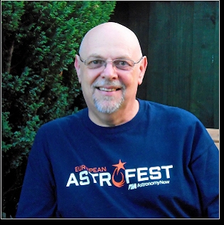

With Pete Williamson
Saturday 15th December
2018 – 10am - 4.30pm at Tooley's Boatyard, Banbury
|
 |
The course will include how to
access the telescopes, how to operate them for research,
imaging and spectral analysis. It will also cover public
access of world data from off-world sources such as probes
and the Hubble Space Telescope.
There will be a demonstration and practical on
manipulating data.
Pete will also cover how to use educational accessible
telescopes (Faulkes Telescope Project), where they are
located and how schools can use them for FREE for imaging
and scientific projects.
Find out more about Pete here
|
|